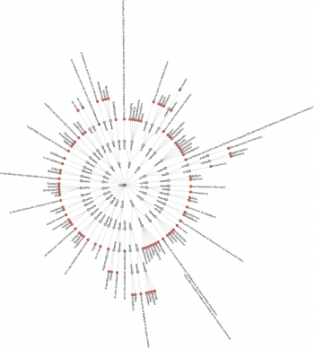
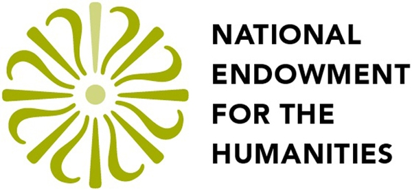

Hellespont Linked Data Interface
As a partner of the German Archaeological Institute, the CoDArchLab cooperates with the Perseus Digital Library at Tufts University to combine the digital collections of classical studies of both institutions. Thus one of the most comprehensive and free online collections of Greek and Roman antiquity will be available for public and scientific use. The basis of the Hellespont project is the combination of text and object data using the metadata format CIDOC CRM. The CRM mapping of the Arachne database is part of other projects of the CoDArchLab carried out at the moment. The use of CIDOC CRM to map ancient text content in order to build a bridge to other types of sources is a methodological innovation. The material world in Thucydides' Pentecontaetia (Thuc. 1,89 to 1,118) is the chosen starting point for the integration of both data sets; other parts of the text will follow at a later stage.
One task of the project consists in manually identifying entities representing categories in the archaeological and textual evidence (e.g. built spaces, topography, individual persons, populations) within the whole text of Thucydides’ Pentecontaetia. These entities will be annotated according to the TEI guidelines, so as to enrich the text simultaneously with historical background information.
Event annotation is also performed simultaneously, taking as a basis the mainly discussed historical events of the text in modern research literature. At this level of analysis, the word strings annotated with TEI markup represent historical events according to the description of the ancient author, which finally ended in the political and military conflict between Athens and Sparta (Peloponnesian War). In the following part of the project, the main content of Thucydides' text will be mapped using the event-based CIDOC Conceptual Reference Model with reference to these word strings.
At the same time, supported by a CHS/DAI joint fellowship, the narrative and discursive structure of the text, as well as all its relevant linguistic features, are also being annotated. One of the goals of the linguistic annotation is to provide a more solid background for the aforementioned task of event identification. The linguistic annotation of Thucydides' Histories is performed according to the guidelines of the Ancient Greek Dependency Treebank, which provide a word-by-word analysis of the morphological and syntactical features of the text. A further level of linguistic analysis, namely the so-called “tectogrammatical annotation” on semantic and pragmatic aspects which are necessary to understand the event structure of a text, will be tested following the model of the Prague Dependency Treebank.
Furthermore, to open up the broader historical context of the related sources, we explore the idea of a VRE combining archaeological and philological data with secondary research literature and in particular journal articles, that will be collected in an automized way. This part of the research is carried out in the context of a PhD project at the Department of Digital Humanities at King's College (formerly the Centre for Computing in the Humanities) since January 2011 and in close cooperation with the Thucydides Project at the CoDArchLab.
The combination of all available sources on a historical topic by means of a single Virtual Research Environment (VRE) will open up new perspectives and modes of research of the ancient greek and roman world.
Starting from October 2010, the project has been funded for three years by the NEH / DFG Bilateral Digital Humanities Program 'Enriching Digital Collections' that offers support for cooperations between U.S. and German scientists to develop research-related digitization projects for the humanities. Each of these projects will be jointly run by an American and a German institution.
{kind=link}
{kind=link}
{kind=link}
![[Enlarge Image]](./hellespont_img/Thuc2.png){kind=link}